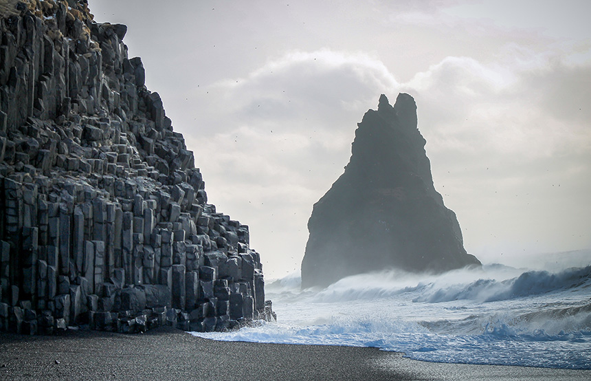

Iceland, the Land of Fire and Ice
Entry #1: Skógafoss, Skógar
 Iceland is probably most well-known for all its waterfalls, but my
favorite has to be Skógafoss. Encased within an indentation of the
mountain, this vertical valley has one of the best views of the most
popular waterfall in Iceland, and for good reason. The images you see
do not do justice to the immense size of this waterfall. Just standing
near the base of the waterfall you hear the thunderous roar of the
water while the water mist mercilessly drenches you from the top to
bottom. Standing right in front of the waterfall could make you feel
its majesty, and also make you realize just how insignificantly small
you are in this universe. Truly a breathtaking view.
Iceland is probably most well-known for all its waterfalls, but my
favorite has to be Skógafoss. Encased within an indentation of the
mountain, this vertical valley has one of the best views of the most
popular waterfall in Iceland, and for good reason. The images you see
do not do justice to the immense size of this waterfall. Just standing
near the base of the waterfall you hear the thunderous roar of the
water while the water mist mercilessly drenches you from the top to
bottom. Standing right in front of the waterfall could make you feel
its majesty, and also make you realize just how insignificantly small
you are in this universe. Truly a breathtaking view.
Entry #2: Reynisfjara Black Sand Beach

There is a place in Iceland that feels most fantasy-like and so
departed from reality, and that is Reynisfjara Black Sand Beach. The
dark sand along with unnatural outside patterns, this place gives you
a feeling of surrealism. I still remember running my hands through the
sand and telling myself no matter where I go there is always something
new that I would have never imagined seeing. Along the beach, if you
walk further beyond the main area, you would see sem-spherical caves
lined with the unique hexagonal shapes making it a perfect place to
take pictures outside of this world.
Entry #3: Blue Lagoon, Grindavík
 The best place to end the trip has to be the Blue Lagoon, which is one
of the largest volcanic hot baths you can find in the world. With the
strong smell of sulfur and other minerals, this is a place of
relaxation. Even during the winter, I am involved in the feeling of
warmth in this pool. If you walk around the pool, you would be able to
find a bar that served many beverages. There is also a mud-mask booth,
where they give you different types of mud masks either free of charge
or at a premium price. Then I ended the day by eating dinner in one of
their lavish restaurants. I left the place feeling light and fresh,
and completely satisfied with my experience here in Iceland.
The best place to end the trip has to be the Blue Lagoon, which is one
of the largest volcanic hot baths you can find in the world. With the
strong smell of sulfur and other minerals, this is a place of
relaxation. Even during the winter, I am involved in the feeling of
warmth in this pool. If you walk around the pool, you would be able to
find a bar that served many beverages. There is also a mud-mask booth,
where they give you different types of mud masks either free of charge
or at a premium price. Then I ended the day by eating dinner in one of
their lavish restaurants. I left the place feeling light and fresh,
and completely satisfied with my experience here in Iceland.